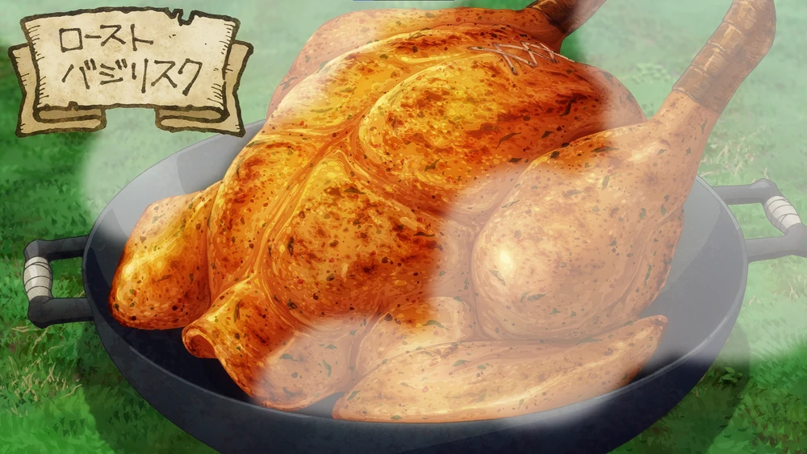

Roast Basilisk

Description
A healthy dish made by Senshi where a whole basilisk is stuffed with
medicinal herbs then slowly spit-roasted over an open fire. It tastes much
better if left overnight to rest after the spice rub and prior to
stuffing, although if time is of the essence it can be cooked immediately.
Ingredients
- 1 Basilisk
- Mana herb, to taste
- Salt and pepper, to taste
Stuffing
- 1 med. Antidotal herb
- 1 bunch Strong medicinal herb
- 1 bunch Ultra medicinal herb
- 1 med. Anti-paralysis herb
- 1 med. Anti-petrify herb
Method
-
Remove the tail and feet of the Basilisk. Blanch it a bit and pluck its
feathers. Take its innards out and rub your spices on it. Stuff it with
veggies and finely chopped herbs and tie up the opening.
- Put a skewer through the meat and roast it thoroughly.
Home